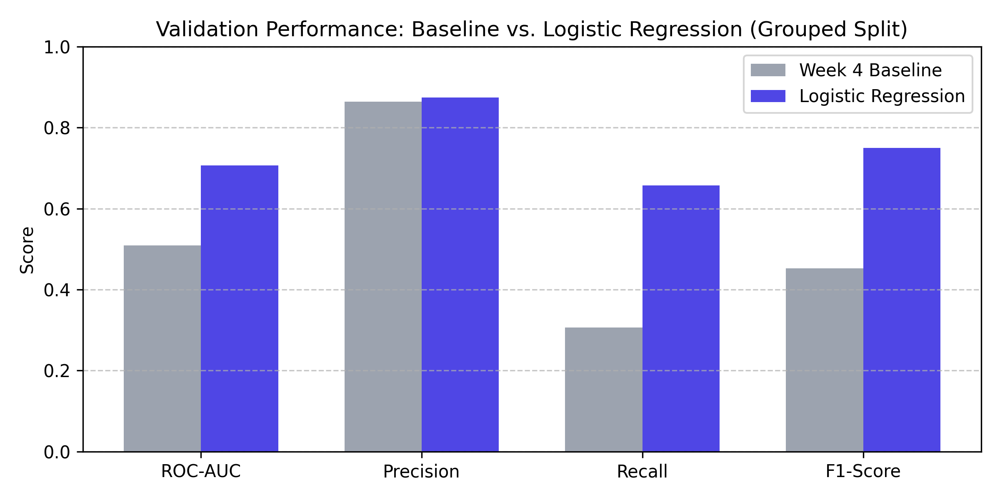
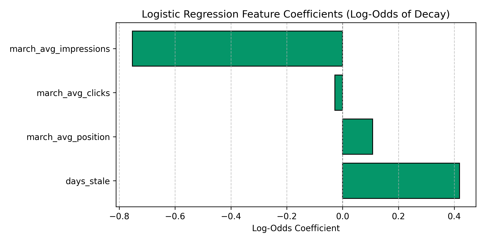

Prioritizing Content Refresh: An Honest Validation Audit and Decision-Support System
Content marketing operations frequently rely on arbitrary calendar-based rules to schedule editorial updates, leading to wasted bandwidth on stable evergreen assets while decaying pages lose organic visibility. In this study, we evaluate whether an interpretable machine learning model can provide reliable decision support to identify content at risk of traffic decay across multi-tenant enterprise search data. We framed the problem as predicting a forward 30-day click decline (≥ 20%) from pre-decision signals and audited performance against a rule-based baseline under an honest client-grouped validation split. The balanced Logistic Regression model doubled recall from 0.3067 to 0.6570 (ROC-AUC 0.7068) compared to static heuristics, demonstrating robust out-of-domain ranking capability on unseen client domains. We translate these calibrated probabilities into an operational action playbook with strict human-in-the-loop guardrails to guide editorial sprint planning.
1. Introduction & Problem Statement
Organic search traffic decays non-linearly across content libraries as search engine result pages evolve, competitor coverage improves, and query intents shift. When organizations manage thousands of published assets, editorial bandwidth becomes the governing operational bottleneck.
Historically, content teams apply static threshold rules—such as flagging any page untouched for more than 90 or 180 days for a complete rewrite. However, our signal audit revealed that staleness alone does not guarantee decay: niche evergreen assets frequently maintain stable rankings without regular modification. Static heuristic cutoffs create arbitrary decision boundaries that miss at-risk pages while over-flagging healthy content. This paper presents an audited, reproducible decision-support system designed to rank content items by post-decision decay probability.
2. Data Sources & Warehouse Scope
The empirical backing of this research is extracted from multi-tenant data warehouses tracking Google Search Console (GSC) and Google Analytics 4 (GA4) telemetry across diverse brand portfolios:
dim_content: Entity-level metadata capturing publication dates, modification timestamps, word counts, and content categories.fact_content_daily_performance: Daily impression counts, clicks, and average ranking positions.
Temporal Boundaries & Guardrails: Features derive strictly from pre-decision activity aggregated to the content level up to 2026-03-31. Outcome targets evaluate forward performance across 2026-04. The warehouse's final month (2026-06) was kept strictly sealed as an unread test holdout. Content items with negative staleness (future update timestamps) or missing search console logs were excluded to maintain contract integrity.
3. Methodology & Validation Design
Ground-Truth Label: A binary target needs_refresh_target is defined as 1 if a content item's average clicks in April 2026 declined by ≥ 20% relative to March 2026 (or lost search presence entirely), and 0 otherwise.
Pre-Decision Feature Set: Input signals derive strictly from information knowable at the decision boundary:
days_stale: Days elapsed since the last content update as of March 31, 2026.march_avg_impressions: Baseline organic search visibility.march_avg_clicks: Baseline user click engagement.march_avg_position: Mean Google rank position across all ranking queries.
Validation Architecture: Standard random train/test splits risk data leakage in multi-tenant environments because a model can memorize client-specific domain authority baselines. We implement a strict Grouped Validation Split (GroupShuffleSplit on client_hash_id), allocating 80% of client domains into training and reserving 20% of clients exclusively for validation.
4. Results & Baseline Comparison
We evaluated both the Week 4 heuristic baseline and our balanced Logistic Regression model on the exact same client-grouped validation split:
| Method | Validation Split | ROC-AUC | Precision | Recall | F1-Score |
|---|---|---|---|---|---|
| Week 4 Rule Heuristic | Grouped by Client Domain | 0.5094 | 0.8645 | 0.3067 | 0.4528 |
| Logistic Regression Model | Grouped by Client Domain | 0.7068 | 0.8741 | 0.6570 | 0.7501 |
The heuristic baseline produced a sub-random ROC-AUC of 0.5094 because static cutoffs fail to establish monotonic decay risk. Logistic Regression achieved an ROC-AUC of 0.7068 and nearly doubled decay capture recall from 30.67% to 65.70%, while raising the F1-score to 0.7501.


5. Limitations & Honest Framing
To maintain research integrity, findings must be framed within explicit operational limits:
- Observational Association vs. Causation: The model identifies content items empirically associated with post-decision traffic decay. It does not prove that updating a flagged page will guarantee search rank recovery.
- Seasonal Confounding: Evaluated across the March–April transition. Cyclical query demand declines may be misattributed to content staleness.
- Search Engine Dynamism: Broad search engine algorithm core updates and competitor backlink velocity were not modeled directly.
- Claim Scope: All findings reflect observed and measured outcomes designed strictly for directional decision support.
6. Ranked Recommendations: The Action Playbook
Calibrated decay probabilities are mapped into three operational tiers to guide editorial triage:
| Reason Code | Recommended Action | Qualification Criteria | Operational Focus |
|---|---|---|---|
STALE_HIGH_TRAFFIC_DECAY |
PRIORITY_REFRESH | Decay risk ≥ 0.70, March clicks > 0 | High-priority rewrite: update stale facts, expand subtopics, request Google re-crawl. |
STRIKING_DISTANCE_OPPORTUNITY |
OPTIMIZE_SNIPPET | 0.50 ≤ Risk < 0.70, Rank position 11–20 | Snippet refinement: rewrite titles, meta descriptions, and tighten query intent alignment. |
LOW_RISK_EVERGREEN |
MONITOR | Decay risk < 0.50 | Leave untouched to conserve editorial bandwidth on healthy assets. |
Strict No-Go Automation Rules
- No Autonomous Auto-Publishing: AI-drafted updates must undergo human editorial verification for factual accuracy prior to deployment.
- No Automated URL Pruning or Merging: Page consolidations or 301 redirects require human review of backlink equity.
- No Automated Changes to Legal or Core Brand Assets: Terms, pricing, and compliance pages must remain excluded from automated triage.
7. Reproducibility & Repository Access
All experiments, feature derivations, model training runs, and audits are reproducible. The complete repository and sequential notebooks are publicly accessible:
- Task Framing & Contract:
work/notebooks/w02_ml_task_framing.ipynb,w03_data_contract.ipynb - Baseline & Initial Model:
work/notebooks/w04_baseline_score.ipynb,w05_model.ipynb - Validation Audit & Playbook:
work/notebooks/w06_validation_audit.ipynb,w07_action_playbook.ipynb - Consolidated Capstone Pipeline:
work/notebooks/capstone.ipynb